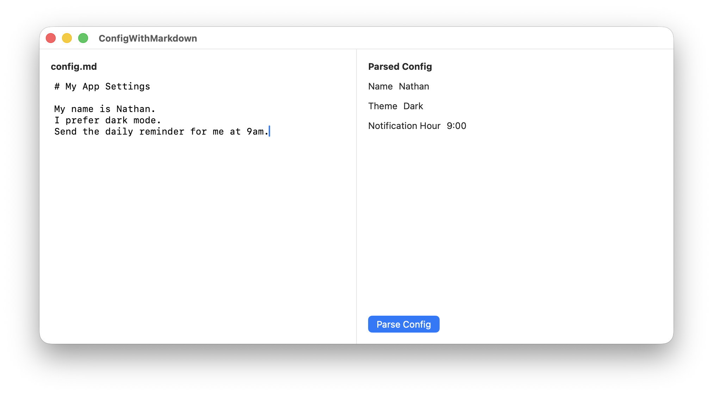

You Could Configure Your App with Markdown
I keep finding little uses for small local SLMs in my side projects, and one that I
really like is using Apple’s Foundation Model to parse a config.md file
into an AppConfig struct. You could configure your display name, your
location, what time you’d like to receive notifications/reminders, the app’s theme, and
more in plain language.
SLM == “Small Language Model” which is what I assume Apple’s on-device model is. LLMs are the giant ones that run on servers or beefy machines.
Apple’s Foundation Models are different from all other SLMs because they are more directly integrated into swift. I don’t have to ask the robot to produce json, parse that, see if it is valid, etc. They handle all of that behind the scenes and I receive a valid swift struct or enum.
Why markdown instead of json or a settings UI?
I’m building a small journal app for myself that’s all markdown. Having the config also be a markdown file keeps the experience consistent for me. It’s all just text files I can edit however I want.
Beyond that, there are real advantages to letting an SLM parse natural language config. Natural language can make setting a time in your app way easier since “9am” and “9:00 AM” and “nine in the morning” and “early, like 9ish” can all work. And there is less UI to build: instead of designing screens with toggles, dropdowns, and date pickers, you just need a text editor. Plus users can even include notes about why they’re choosing to configure something a certain way right there in the markdown.
This pattern works for other things too: natural language search (“show me photos from last summer”), extracting data from messy text (receipts, emails), smart tagging, or anywhere users would benefit from not having to learn your app’s specific input format.
Here is a little app I made. You can find the project up on GitHub. It’s just a one file SwiftUI macOS app.

I can’t provide a Playground because playgrounds cannot use macros, so they can’t show off the
@Generablestuff. So it must be a whole ass xcode project. Sorry.
My dream config struct for this app looks like this:
@Generable
enum Theme: String {
case light
case dark
}
@Generable
struct AppConfig: Equatable {
@Guide(description: "The user's display name if specified")
var name: String
@Guide(description: "The user's preferred color theme. Use 'light' for bright backgrounds and dark text, good for daytime or well-lit environments. Use 'dark' for dark backgrounds and light text, easier on the eyes at night or in dim rooms.")
var theme: Theme
@Guide(description: "Notification hour in 24-hour format (0-23), or -1 if not specified. Pay attention to AM vs PM and daytime vs evening context.")
var notificationHour: Int
}(I wanted to mix in an enum just to show how fancy this can be.)
@Guide is for the SLM to try to help it figure out what these fields are
for. This is “prompt engineering” right here. You can see I’ve tried to
explain a bit why one might want light vs dark mode, which hopefully would
work for a config file that says something like “I mainly work at night.”
This is how you could use Apple’s local model to parse some markdown into that struct:
func parseConfig(markdown: String) async throws -> AppConfig {
let model = SystemLanguageModel(guardrails: .permissiveContentTransformations)
let session = LanguageModelSession(model: model)
let prompt = """
Extract settings from this config file:
\(markdown)
Look for the user's name, theme preference (dark/light mode), and any notification time they've specified.
"""
let response = try await session.respond(to: prompt, generating: AppConfig.self)
return response.content
}
OK, about the guardrails: it’s not what you think. The default guardrails
are so restrictive that they won’t work a majority of the time. With the default
guardrails if you ask the SLM to “tell me a joke” it will refuse to do so. And even
with .permissiveContentTransformations there are still a ton of guardrails
on.
IMHO Apple’s models are useless without
.permissiveContentTransformations.
The rest of the app is the SwiftUI to make the two pane layout + button. You can view it all on GitHub.
And you don’t have to use Apple’s models. At work we’ve open sourced our code we use to boot up and use on-device MLX SLMs like Qwen 3 in our new.space app – our library is called SHLLM.
You can also just use Ollama or another local model manager that exposes an HTTP api and use any OpenAI compatible HTTP client package.
And soon small models will be able to solve little problems on-device even on the web. Chrome is experimenting with a built-in Prompt API that runs Gemini Nano locally in the browser. I made a test page that parses a markdown config the same way. It’s still in origin trial, so it might not work for you yet, but it’s coming.
Small models can do lots of small, interesting things like this. I am continually looking for more places to use little models to solve little problems. And it’s all on-device, nothing leaves or goes to any company anywhere, which is important to me. More and more I want more things running on my devices when possible.
What ideas do you have for where to use local models? What are some problems you’ve used small models to solve yourself? Hit me up on mastodon or threads.